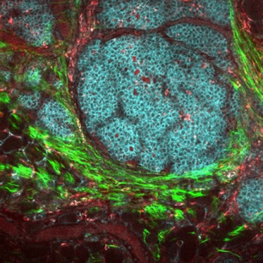

SciJava methodology
Working together for good and awesome
Curtis Rueden,
UW-Madison LOCI
Tweets to #FijiLearnathon
https://imagej.github.io/presentations/2017-06-19-dais-learnathon


Laboratory for Optical and Computational Instrumentation
LOCI develops advanced optical and computational techniques for imaging and experimentally manipulating living specimens.

Scopes

Science

Software
Why are we here?
- To learn "the new stuff"?
- To learn "best practices"?
- To write "cleaner" or "more correct" code?
- To make an impact!
Communicate
Organize
- Community is good at producing material!
- Less good at organizing it
- Over years, becomes difficult to find things
-
Work together!
Relieve pain and suffering!
ImageJ will be as good as you make it!
Bootstrapping experiment!
Can you all organize these segments onto the wiki?
Scenarios
- Unanswered post where I know the answer?
- Unanswered post where I know who knows the answer?
- Unanswered post about some unknown plugin?
- Common FAQ on the forum?
- https://imagej.net/Troubleshooting
- https://imagej.net/FAQ
- https://imagej.net/Batch
- https://imagej.net/Segmentation
- https://imagej.net/Tutorials
Topics
- Maven, POMs, versions
- Intro to SciJava and ImageJ2 APIs
- How to hack on Java projects in Eclipse
- Which parts of ImageJ2 are usable? Stable?